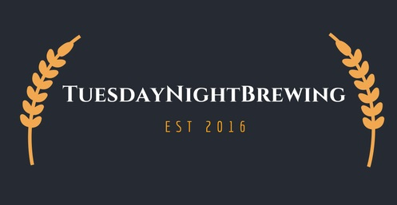

Our Brewing Process
"Brewing is the production of beer by steeping a starch source (commonly cereal grains, the most popular of which is barley)[1] in water and
fermenting the resulting sweet liquid with yeast. It may be done in a brewery by a commercial brewer, at home by a homebrewer, or by a variety
of traditional methods such as communally by the indigenous peoples in Brazil when making cauim.[2] Brewing has taken place since around the 6th
millennium BC, and archaeological evidence suggests that emerging civilizations including ancient Egypt[3] and Mesopotamia brewed beer.[4] Since
the nineteenth century the brewing industry has been part of most western economies."

"The basic ingredients of beer are water and a fermentable starch source such as malted barley. Most beer is fermented with a brewer's yeast and
flavoured with hops.[5] Less widely used starch sources include millet, sorghum and cassava.[6] Secondary sources (adjuncts), such as maize (corn),
rice, or sugar, may also be used, sometimes to reduce cost, or to add a feature, such as adding wheat to aid in retaining the foamy head of the beer.
[7] The proportion of each starch source in a beer recipe is collectively called the grain bill."
"Steps in the brewing process include malting, milling, mashing, lautering, boiling, fermenting, conditioning, filtering, and packaging. There are
three main fermentation methods, warm, cool and spontaneous. Fermentation may take place in an open or closed fermenting vessel; a secondary
fermentation may also occur in the cask or bottle. There are several additional brewing methods, such as barrel aging, double dropping, and Yorkshire
Square."
Explanation is direct quoted from Wikipedia page on brewing
